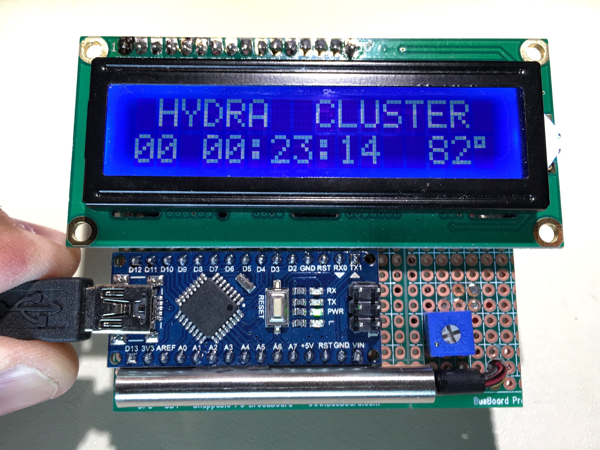

About me
- Carlos Justiniano, NYC-JavaScript-Flatiron founder
- First IoT project in 2001
- Ten years later I learned about NodeJS
- Developed Node applications in production use since 2011
- Chief Architect at Flywheel, note: we're hiring!
Acronyms and Vernacular
- SoC: System on a Chip. Integrates system components into a single chip. Think: processor, GPU, memory and other interface layers for IO
- PCB: Printed Circuit Board. Integrates components into a convenient package
- SBC: Single Board Computer. Contains an SoC and integrates other components and interfaces into a single printed circuit board
- IoT: Internet of Things. Networked devices built using the above tech
- Microcontroller: Differs from a microprocessor (CPU) in that unlike a CPU it also features memory and other SoC components
What we'll cover
- Setting up Node on Single Board Computers (SBCs)
- SBCs communicating with other computers and controlling devices such as LCDs and Lights
What we won't cover
- We won't cover other popular languages for controlling SBCs, such as C/C++ and Python
- We can't cover the full breath of what's out there
- Think of this presentation as a reasonibly quick introduction
We will deep dive!
- But, you won't need to feverishly take notes
- This presentation and accompanying how-tos are posted in its own github repo
- https://github.com/cjus/node-in-small-places-presentation
Why bother?
- Because we can! SBCs are far more approachable than you might expect
- Low cost facilitates getting started
- They're also a great way to learn about Linux and machine configuration
- The resource restrictions get you thinking about how to optimize your applications
- That generally helps you create better software
- And ...
How we got here
- The industry benefited from advancements in the creation of mobile devices
- Demand for mobile devices reduced the cost via economies of scale
- Educators leveraged this opportunity to make these devices great teaching tools
- People like us fuel demand for these devices!
Let's begin our deep dive
How SBC's differ from our other computers
- No keyboard, mouse or screen
- Memory is severely limited
- No hard disk, storage is often a microSD card with limited write cycles
- The saying "you get what you pay for" definitely applies here
How SBC's differ from our other computers
One of the key differences with SBCs is that you get general purpose input output pins, referred to as GPIO pins
GPIO Pins
Allow you to connect to other devices such as sensors, motors, switches and other controllers
And those devices are some of the building blocks of robotics
Raspberry Pi Zero
- Broadcom BCM2835 ARM11 core processor running at 1GHz
- 512K RAM
- Features a Micro-SD card, a mini-HDMI socket for 1080p60 video, Micro-USB sockets for data and power
- Tiny! at only 65mm x 30mm x 5mm
- Runs Linux
- Costs, only $5 dollars!
DEMO!
Using GPIO pins
This is like the hello world program of embedded systems ;-)
Software Setup
- First we copy a Linux image onto a microSD card.
- Then we install NodeJS
- And then we'll see how our light demos actually work!
OS Setup
Sorry, but we won't do this process live, because it can take up to 30 minutes to complete
- Detailed How-To: https://github.com/cjus/hydra-cluster/wiki/Setting-up-a-Pi-Zero
- Download OS from: https://www.raspberrypi.org/downloads/raspbian/
- Insert a microSD in drive and type:
$ sudo dd if=./2016-05-27-raspbian-jessie-lite.img of=/dev/disk2
OS Setup
- When the image is copied you can find a boot aread of the disk
- You'll just need to edit two files to establish networking
OS Setup
These setting will allow us to network our Pi over USB
- Edit config.txt by appending dtoverlay=dwc2 to the end of the file and saving it.
- Edit cmdline.txt by inserting modules-load=dwc2,g_ether after rootwait. Make sure that the file only contains a single line with no newlines.
Let's connect
- Safely eject your SD card and insert it into your Pi
- Connect the USB cable to your Pi to provide power and connectivity
OS Setup
You should be able to ping it...
$ ping raspberrypi.local
PING raspberrypi.local (169.254.2.0): 56 data bytes
64 bytes from 169.254.2.0: icmp_seq=1 ttl=64 time=0.588 ms
64 bytes from 169.254.2.0: icmp_seq=2 ttl=64 time=0.651 ms
64 bytes from 169.254.2.0: icmp_seq=3 ttl=64 time=0.576 ms
64 bytes from 169.254.2.0: icmp_seq=4 ttl=64 time=0.626 ms
SSH
If the former works you can SSH into your Pi with a default user of pi and a password of raspberry
$ ssh pi@raspberrypi.local
The authenticity of host 'raspberrypi.local (fe80::854b:2ab:d95f:6ff2%en7)' can't be established.
ECDSA key fingerprint is SHA256:dlH/03cQ77GcNYo6pygUl33GHp6698+c+wSlVKUuLBs.
Are you sure you want to continue connecting (yes/no)? yes
Warning: Permanently added 'raspberrypi.local,fe80::854b:2ab:d95f:6ff2%en7' (ECDSA) to the list of known hosts.
pi@raspberrypi.local's password:
Installing Node!
$ sudo apt-get install wget
$ mkdir nodejs
$ cd nodejs
$ wget https://nodejs.org/dist/v6.5.0/node-v6.5.0-linux-armv6l.tar.xz
$ tar -xvf node-v6.5.0-linux-armv6l.tar.xz
$ cd node-v6.5.0-linux-armv6l/
$ sudo cp -R * /usr/local/
You should now have Node installed
$ cd ~
$ node --version
v6.5.0
CODE DEMO!
How our light demos work
- We created a folder for our light demos: mkdir light-demos; cd light-demos; npm init
- We just installed the pi-blaster NPM package: npm install pi-blaster
sine.js
const piblaster = require('pi-blaster.js');
const LED_PIN = 4;
let y = 0;
let intervalID = setInterval(() => {
let s = Math.abs(Math.sin(y/10));
piblaster.setPwm(LED_PIN, s);
y += 1;
if (y > 180) {
y = 0;
}
}, 100);
process.on('SIGINT', () => {
clearInterval(intervalID);
piblaster.setPwm(LED_PIN, 0);
setInterval(() => {
process.exit();
}, 1000);
});
sos.js
const piblaster = require('pi-blaster.js');
const LED_PIN = 4;
const LED_ON = 1;
const LED_OFF = 0;
const SOS_PATTERN = [
LED_ON, LED_ON, LED_ON,
LED_OFF,
LED_ON, LED_OFF, LED_ON, LED_OFF, LED_ON,
LED_OFF, LED_OFF,
LED_ON, LED_ON, LED_ON,
LED_OFF, LED_OFF, LED_OFF, LED_OFF, LED_OFF, LED_OFF];
let i = 0;
let intervalID = setInterval(() => {
piblaster.setPwm(LED_PIN, SOS_PATTERN[i]);
if (i > SOS_PATTERN.length - 1) {
i = 0;
} else {
i += 1;
}
}, 500);
process.on('SIGINT', () => {
clearInterval(intervalID);
piblaster.setPwm(LED_PIN, 0);
setInterval(() => {
process.exit();
}, 1000);
});
Even more displays...
We'll see even more displays later in this presentation
Connecting SBCs
Playing with single board computers is really cool.
Getting them to communicate with one another is even cooler!
Messaging options
There are a lot of ways to handle communication:
- Express based APIs
- Web sockets
- Using an intermediary such as Rabbitmq, MQTT or Redis
- Over USB using serial communication
- And even by creating a communication bus via wires to GPIO pins
Messaging options
In our next demos we'll look at serial communication and messaging via Redis pub/sub and ExpressJS APIs
Introducing the Hydra Cluster
- Here at Flywheel we've built a set of libraries we call Hydra. Hydra allows us to build, deploy, and monitor microservices to the cloud
- During the past month I built a 16 core cluster to demonstrate Hydra running on low cost hardware doing microservice-y things
Hydra Cluster
- If you're interested in this sort of thing see the Github Repo for tech info: https://github.com/cjus/hydra-cluster
Communication revisited
Let's get back to communication
Using the Hydra Cluster we'll examine:
- Serial communication
- Redis Pub/Sub
- ExpressJS-based APIs
Serial Communication
- I built a temperature display using an Arduino microcontroller, a temperature sensor and a 16x2 LCD display

Serial Communication
- The device is connected to a Raspberry Pi using serial over USB
- A Node microservice running on a Pi recieves the serial data and stores it for later use
- The node service also renders the uptime and temperature data on a connected 3.5 inch LCD display
CODE DEMO!
Communication over Serial
- First we'll look at the code for the Arduino microcontroller
- It's not JavaScript, but it will be easy to follow
- Then we'll look at how the node app recieves serial data via node-serial NPM package
Inside Node
- Node and V8 are compiled for the underlying processor - which is great!
- You can start Node with flags intended to tweak V8 memory usage.
- Future versions of Node may optimize for IoT - perhaps MS Chakra?
- Node on ARM processors: https://nodesource.com/blog/node-and-arm/
Contact
- cjus on Twitter and Github
- Email: cjus34@gmail.com
- About: http://cjus.me